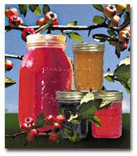

Marion's Festivals
Travel info:
Bring your lawn chairs and come early to enjoy the fun with us. Mother's day Saturday begins early with arts and crafts, displays, entertainment and games for all ages.
We hope that you and/or your organization will take this opportunity to rent a booth, to display and/or sell your goods and enjoy this day of fun with us.
Booth begins at early on Saturday. Booth sizes average 10' X 12'. The only restrictions will be the selling of soft drinks and anything showing obscenities or use of bad language.
For additional information please
contact:
Marion Town Hall - 318-292-4716
Sponsored by the Marion Fire Department
So, just what is a Mayhaw? For our Northern neighbors, a definition
may be in order: The Mayhaw Tree is in the hawthorne family, a
distant cousin of the rose. It grows near streams and
swamplands bearing fruit that look like small crabapples. The Mayhaw is
found in the Southern United States from East Texas to the panhandle of
Florida. The heaviest concentrations of native mayhaw trees are found
in Grant Parish, Louisiana , near Winnie, Texas and in the Pearl River
swamps of Mississippi.
The mild difficulty of harvesting wild Mayhaw fruit (have your boat
handy) is more than compensated by the distinct flavor of the jam,
jellies, wines and cakes derived from this unassuming Southern delight.
In addition to the traditional jam and jelly Mayhaw recipes, there are many delicious dessert ideas...
|
3 Cups Sugar |
2 Teaspoons Rum Extract |
Combine sugar and butter; cream until light and fluffy. Add eggs, one at a time, mixing well after each egg. Combine dry ingredients; add to creamed mixture alternately with sour cream, beating well after each addition. Stir in remaining ingredients. Pour batter into a well-greased and floured 10-inch bundt pan or tube pan. Bake at 325 degrees for 1 hour and 20 minutes, or until cake tests done.
With 8 lbs of mayhaw pulp, cook over low heat until thick enough to round up in a spoon. As pulp thickens, stir frequently to prevent sticking. Add:
|
5 Cups Sugar |
1 Tablespoon ground nutmeg |
Continue stirring frequently over very low heat until thick, about 1 hour. When mixture flakes from the spoon, pour the butter into sterilized jars. Seal and process in boiling water bath for 15 minutes.
Website created by the Town of Marion (2007)